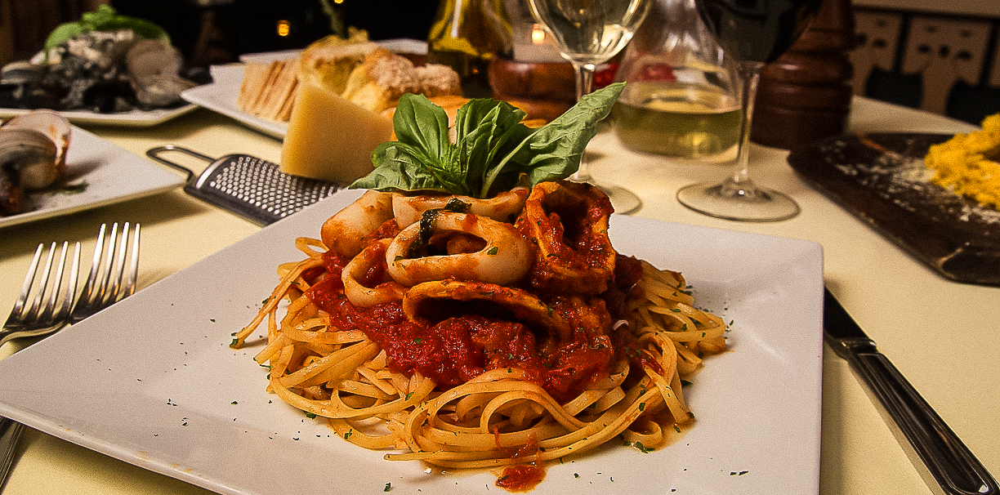

Tips para preparar una verdadera pasta italiana.
12 abril, 2018

Entendemos que la pasta es uno de los platillos más populares alrededor del mundo y por su distribución esta ha tenido alteraciones de acuerdo a las locaciones y las diferentes culturas a las que se adapta. Es por eso que hemos decidido en meternos a la cocina y compartirle algunos tips de nuestra cocina. Y que mejores tips que el mejor restaurante italiano.
A continuación, les ponemos sobre la mesa 5 sugerencias para cocinar la pasta como un verdadero italiano lo haría, o lo que es lo mismo, sepa lo que un italiano nunca haría, o MEJOR aún, conozca nuestras familias de pastas en la Trattoría italiana de Cancún: #TrattoriaLimoncello
Consejos de nuestra cocina:
- Nunca debe usted añadir grasas en el agua de la cocción, sea un chorro de aceite o de mantequilla. Se cree, erróneamente, que de esta manera la pasta no se va a pegar a la olla. Pero basta remover con un cucharón durante el primer minuto y se obtendrá el mismo resultado. Eso sí: ¡siempre mejor usar una olla de acero que de otro tipo de material!
- Poner en el agua sal gruesa, no fina. Con menos cantidad, proporcionará más sabor. La dosis ideal es de una cucharilla para 100 gramos de pasta, como mucho. Nunca hay que poner la sal cuando el agua está fría porque tarda más en disolverse y puede corroer el fondo de la olla.
- Hay que procurar ser muy rápido al escurrir y mezclar la salsa, operación que se hace en segundos. No vale dejar la pasta en el escurridor mientras se va poniendo la mesa: así se enfría y se convierte en pegamento. La pasta hay que comerla enseguida, en caliente.
- Un truco consiste en morder un poco de pasta y comprobar que en su interior el color ha pasado del amarillo al blanco. Comerla demasiado cocida es un error, pero cruda, también. La pasta tiene que partirse en la boca al masticar y no tiene ni que derretirse, ni fragmentarse. No es verdad que la pasta más hecha sea más fácil de digerir. Al contrario, es una concentración de almidón deshecho muy indigesto.
- Nunca mezclar queso con pescado y marisco, porque son sabores que chocan entre ellos. Asimismo, con ciertos ingredientes (unos tomatitos frescos, por ejemplo), el parmesano no es necesario.
BUON APPETITO!!!!!